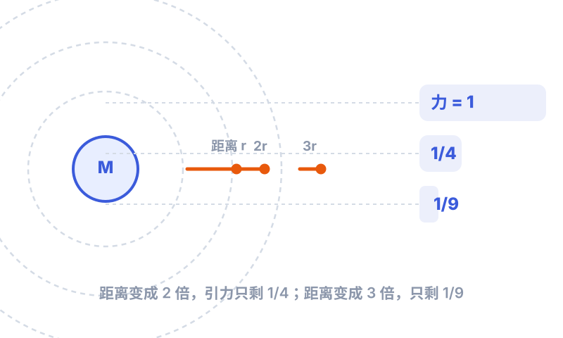

一、一个改变历史的问题
据说，牛顿在老家果园看到苹果落下，心里冒出一个别人没认真想过的问题：
苹果会被地球拉向地面。可地球引力有没有"尽头"？它能不能一直延伸到月亮那么远，甚至把月亮"拉"住，让月亮不掉下来、也不飞走？
如果答案是"能"，那就意味着：天上和地上，用的是同一条规律。在牛顿之前，人们默认"天上"归天使和完美圆周，"地上"才归普通力学——两者井水不犯河水。牛顿偏偏要把它们拧成一股绳。
二、苹果和月亮，同一个力
牛顿的洞见是：月亮其实一直在"掉"，只是它横向跑得足够快，永远"错过"地球的表面。想象你从高山上水平扔一块石头：扔得越用力，它落得越远；如果快到一定程度，它就会绕着地球转圈，永远落不到地面——这就是人造卫星的原理，月亮就是天然的那颗"卫星"。
所以，苹果落地和月球绕地，是同一件事的两种表现。这个想法漂亮得近乎简单，但要把它变成精确的数学，牛顿花了二十多年。
三、平方反比：距离越远，力弱得有多快？
引力肯定随距离变大而变弱，但是"按什么比例"变弱？这是关键。牛顿（以及之前的胡克等人）推断，引力随距离的平方反比变化——

距离翻 2 倍，引力变成 1/4；翻 3 倍，变成 1/9。因为要和面积一样，按"距离的平方"来分摊。
四、万有引力定律：一个公式统一一切
把这些想法合起来，就是一个惊天简洁的公式：
这个公式的厉害之处在于：它同时管着苹果、月亮、行星、彗星、潮水，甚至你扔出去的纸团。牛顿证明了——只要承认这条规律，行星的椭圆轨道、彗星的回归、潮汐的涨落，全都能算出来。
五、它能解释什么？（而且都验证对了）
- 行星为什么走椭圆？ 牛顿用数学证明：平方反比的引力，必然让天体走椭圆（或抛物线、双曲线）。这就把开普勒几十年前总结的"行星轨道是椭圆"，从现象提升成了可以推导的定理。
- 潮水为什么每天涨落？ 月亮和太阳对地球不同位置的拉力有微小差别，海洋就被"拉"出了潮汐。
- 彗星为什么还会回来？ 哈雷用这套公式算出了后来以他命名的彗星，预言它约 76 年回归一次——后来真的应验了。
- 连一颗还没看见的行星都能"算"出来。 后来人们发现天王星轨道有点"歪"，推断是外面还有一颗行星在拉它，于是按引力公式反推出位置，果然找到了海王星。这是万有引力最帅的一次"预言成真"。
六、一本书的诞生：牛顿与哈雷
1684 年，天文学家哈雷跑来问牛顿一个难题：如果引力按平方反比，轨道该是什么形状？牛顿答："椭圆。"哈雷惊了，追问证明，牛顿说手稿找不到了。于是哈雷出资、催稿、亲自校对，硬是把牛顿重新算出来的成果，印成了 1687 年的《自然哲学的数学原理》。
没有哈雷的"逼问"和资助，这本改变物理学的书，可能还要在牛顿的抽屉里躺很多年。
七、它今天还在管着我们
你今天能用手机导航、看卫星电视、看火箭发射直播，底层都跑着这个 300 多年前的公式：
- 发射卫星，要算准它绕着地球的轨道和速度；
- 登月、去火星，每一步都是万有引力在指路；
- 就连你手里的 GPS，也要同时考虑引力和相对论带来的时间差，否则会偏出十万八千里。
所以牛顿那句被反复引用的话，名副其实："如果说我看得更远，那是因为我站在巨人的肩膀上。"他站在哥白尼、第谷、开普勒、伽利略的肩上，又给后来所有人，立起了一座更高的肩膀。